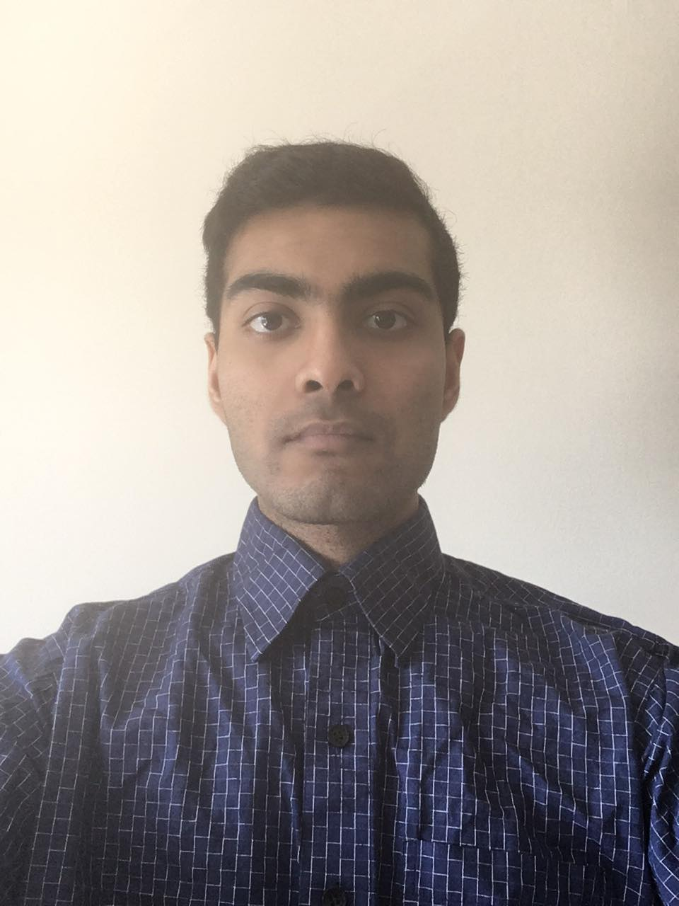

Pages
Biographies - get to know the Bytes team!
Jodi Jang

Jodi Jang is a passionate third year student in the Computer Science Software Engineering Specialist Co-op Program at the University of Toronto Scarborough. She is fluent is multiple programming languages including Java, Python, and C, and she has used these programming languages in various projects. Additionally, Jodi has experience using Android Studio to create user-friendly interfaces and creating Bash scripts to automate laborious processes. Furthermore, she has strong knowledge of software concepts including Object-Oriented design and various design patterns. Jodi has gained hands-on programming experience designing algorithms, creating software, and writing technical documents while working at Thales Canada. Some of the projects she worked on includes creating software to implement a post-processing procedure for analysis and comparison of sensor data and developing a procedure for benchmarking computer performance while running a program. She used strong verbal and written communication skills to present, analyze, and document these projects.
Tia Jang

Tia Jang is currently a third year student at the University of Toronto Scarborough, studying Computer Science and specializing in Software Engineering. She has more than four years of programming experience, including Java, C, C++, and Python languages. Over the years, she worked independently and collaborated with teams to produce a variety of programs. Using Android Studio, she collaborated with a team to code an interactive shopping application that featured object-oriented design and user-friendly layouts. Most recently she has interned at Thales as a research engineer, where she designed and implemented an autoexposure algorithm for a camera. This algorithm ensured the camera’s exposure was correctly controlled to take well-exposed images in a dynamic environment, and applied research of image quality and multi-threading. She communicated effectively with a team and through comprehensive technical reports. She is passionate about applying her skills and learning new skills to provide innovative solutions to challenges.
Tahmid Haque

Tahmid Haque is an enthusiastic third year Computer Science student at the University of Toronto Scarborough, specializing in Software Engineering. He is a capable programmer with over four years of coding experience using languages such as Python, C#, JavaScript and others. Having knowledge of good software design and web development methodologies, he continues to learn about the best programming practices and the strategies used in creating user-friendly software. Last fall, Tahmid interned at a payment startup called Vouchr as a QA Analyst, where he developed and executed test plans. During his time there, he gained valuable experience of debugging techniques by resolving technical issues on Web, iOS, and Android platforms. More importantly, he learned of the importance of designing software that facilitates the needs of various types of users and the need of maintaining good communication across development teams. In the future, Tahmid aspires to leverage his past professional and academic experiences to develop both easy-to-use and innovative software.
Junaid Ali Syed
Junaid has an ambitious goal of becoming a Software developer in the near future. Currently he is a third-year student who is specializing in software engineering at University of Toronto Scarborough campus. Junaid has worked in many projects and gained experience in multiple languages such as Java, Python and C#. Junaid gained interest in computer science during high school where he started learning on his own to develop his own projects. Some of his most successful projects includes implementing an interactive command line and developing a 2D platform game. Junaid's 2D platform game was a team project and consisted of self-learning of unity and C# which took the duration of a few months. The interactive command line was also a project worked alongside 3 other team members in an agile SDLC environment. Frequent communication with team members and client was necessary in ensuring a successful project. Junaid hopes to continue developing more projects and acquire more skill as an everlasting enthusiast for technology.
Aaren Chu

Aaren is a diligent and detail-oriented third year Computer Science student at the University of Toronto Scarborough, specializing in Software Engineering. She has and is continuing to gain extensive experience in logical analyses, writing, documenting, testing, implementing and debugging code, both academically and in extracurricular hobbies. She has a strong theoretical background in programming languages and web applications, including Java, Python, C/C++, AngularJS, NodeJs, and shell scripting. She has started to learn AngularJS in her downtime for her personal website, using Github as version control and CI/CD. She also enjoys solving security puzzles on OvertheWire.org and hopes to extend further into CTF challenges and Hack the Box. She also possesses strong teamwork and problem solving skills.